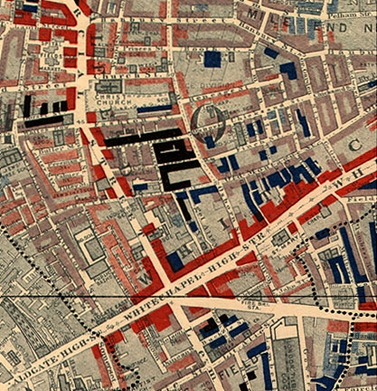

Interlude
1888
"The watch committees carry rattles and cudgels. What walks these lanes carries neither."
— East London broadsheet, November 1888
1888: The Watchman's Daughter

Chapter Sections
I. The Watch Committees

By the middle of November the East End has learned a new gait, and wears it everywhere: nobody walks home alone after dark, and whoever must walks fast, in the middle of the street where the gas lamps can reach, one hand near a pocket and whatever the pocket holds. Five women dead since August, the last of them, found on the ninth, worse than anything printed about the four before her — cut in ways the newspapers only gesture at, careful even now not to be indecent about it. Tradesmen have formed watch committees, patrolling in twos with rattles and thick sticks, doing the work Scotland Yard is failing to do fast enough for anyone's comfort. Whitechapel is a mile off, but fear does not respect parish boundaries, and every woman working the dock roads from here to there has started carrying something sharp of her own.
The Prospect keeps its lamps burning a little longer than usual. Men drink faster and leave in groups. Nobody says the word much — Ripper — as though naming it summons it, but it sits in the room anyway, in the way the door gets watched every time it opens.
In the corner, the chair with the too-short back leg sits empty tonight, the way it usually does — propped level with a folded playbill for going on two centuries now, nobody left alive who could say why, regulars just knowing to leave it for last.
II. Long Liz and Kate
Before they were the third and the fourth names on a list, they were customers.
The laundry Su Zhang's mother takes in comes from everywhere the river touches — sailors' shirts mostly, brought round in a wicker basket and settled at the Prospect's bar because half the customers owe money faster than they can be tracked down anywhere else — but some of it walks in off the Whitechapel Road on its own feet. Working women, the polite word is, when a polite word gets used at all. They bring what they have: a good bodice that has to last, a Sunday shawl, linens whose whiteness is a kind of livelihood. They pay in farthings, and they pay late, and Su's mother takes the work anyway, because Sau-Ling Zhang — sent for from Hong Kong the year the shop could feed two, baptised since at the mission church by the docks — has been poor in two countries and holds strong opinions about who deserves clean linen, which is everyone.
Long Liz comes on Mondays, when she comes. A tall Swede with a soft accent she can put on or take off like a bonnet, who crossed her own ocean the way Su's father crossed his, and remade herself in English the way he did, and knows it — the two of them once spent a quarter of an hour at the shop counter comparing, with great seriousness, which words they still could not feel anything in. Grief, Liz said, is only a noise to me in English. In Swedish it has a floor and walls. And Su, who keeps her two languages in separate rooms and visits each alone, gave her back the word her father uses in the yard and will not translate — the one that comes out flat and small in English as the work and in Cantonese has a weight in the mouth like a stone taken up in the hand — and Liz nodded slowly, the way a person nods at a foreign coin they can tell is real money even if it cannot be spent here. For a quarter of an hour two women who had each crossed an ocean and left a self on the far shore of it stood at a laundry counter and were, briefly and exactly, understood. It did not happen to Su often, being understood in either language. She kept the quarter of an hour the way you keep a thing you were not given a second of. Liz tells everyone who will listen that she lost her husband and two of her children when the Princess Alice went down — six hundred souls in the Thames off Woolwich, the worst night the river ever gave this city — and Su, who has spent her life reading which knots are tied wrong, worked out years ago that the story isn't true, or isn't hers. She has never said so. Some stories are load-bearing. You do not pull them out of a person and expect the person to keep standing.
Kate comes whenever there's mending, which is always, because Kate's whole wardrobe is a running argument with time. Small, quick, Midlands-voiced, cheerful the way a kettle is cheerful — loudest when things are hottest. She calls Su duchess, for no reason anyone remembers, and sings while she waits for her parcels — halves of songs, verses of things, whatever's already in the room. There is one she keeps coming back to, a slow one about a girl waiting on a quay, and she only ever has the front of it — the rest went the way half of everything in Kate's life has gone — and she has promised Su, more than once and again this September, that the hop gardens will have the whole of it, the hoppers always do, and she'll carry the back half home like a jar of good Kentish honey and they'll have the entire song out at last, all of it, start to finish, and find out how the girl on the quay makes out. Su has come to look forward to it more than she would say. In September she's full of plans: she and her man are off to Kent for the hopping, weeks of clean air and farm wages, and she'll come back flush and settle her slate, see if she doesn't. She says it laughing, both of them knowing the slate will outlive them all.
Mind yourself down there, duchess, she says on her way out, the last Monday of the summer, nodding at the newspaper on the counter with its black headline. And Su says, You too, and means it the ordinary amount — the amount you mean it when the world still seems wide enough for everyone to be careful in.
III. The Work
Her grandfather was a master in Canton. Not a rich man — a man other men came to, which on his street was better than rich. He kept his school until the English gunships came up the Pearl River and the war made the city no place for teaching boys, and then he moved the family to the raw new colony at Hong Kong — a fishing shore the treaties were busily turning into a harbour — and began again in a yard behind a ship-chandler's on the waterfront, where her father grew up learning both trades at once: the art before dawn, and rope, tar and lamp-oil the rest of the day. When the old man died, Wei Zhang buried him on the hillside above the harbour, took ship, and carried both trades to the far end of the world — to London, and to the thin scatter of his own countrymen along its river: a few hundred souls, perhaps, in a city of millions, and of those the merest handful settled and shopkeeping, gathering in ones and twos around the Causeway at Limehouse, where a home for stranded Asian sailors had opened its doors the year before he landed. He was one of that handful a patient man could have counted on his fingers and toes — a Chinese chandler with a Cantonese wife sent for across the world, keeping a shop and a wash-copper on the Causeway among the few Chinese families gathered there, on the same crook of the riverside that fed the Prospect its custom and carried the Company's cargo past every door on it. Which is how a war the Company started over opium came, two generations later, to decide what a girl in Wapping could do with her hands. Sailors who saw such things in the treaty ports came home calling it Chinese boxing, and other words would come later, but her father never used any of them. He called it the work, in the same flat voice he used for the shop's accounts, and he taught it to Su in the yard behind the chandlery from the time she was seven years old, at dawn, before the counter opened, because that was when his own father had taught him.
The work is not what the sailors' stories make of it. It is standing in a low horse stance while the wash-copper heats, until her legs shake, and then until they stop shaking, which takes years. It is her forearms meeting the wooden rail, over and over, until bone learns what bone can be asked to bear. It is the laundry itself, though she doesn't understand that for a long time — ten thousand sheets wrung out by hand build a grip no drill can, and her father watches her wring them and says nothing and counts it as training, because it is. Corrections arrive by fan — a plain folded wooden fan, older than her father, that raps an elbow level or presses a knee out of a lazy angle without a word ever being spent; in Canton it had splinted the very wrists it broke, the lane's master being also the lane's bonesetter, and it crossed the ocean in the same bundle as the white bowl. And it is two-person work in the near-dark, her arms crossed against his, learning to read force through touch the way she reads knots by eye: where a push is going before it knows itself, which way a wrist wants to turn, what a shoulder confesses half a second before the hand moves. Listening, her father calls it. By fifteen she can stand in the yard with her eyes shut and tell him, through two crossed wrists, which foot his weight is on.
His hands wrote all of this into her, and this autumn, without meaning to, she has begun reading what is being written back out of them. Forty years of rope have laid down calluses that no longer soften; the chandler's tar has gone into the seams of his knuckles and stayed there, a grey chart no washing lifts. And the cold has started finding the old breaks — his own father set most of them, in the yard above the Hong Kong harbour, with this same fan that raps her elbow level; the lane's master being also the lane's bonesetter, the hand that corrects is the hand that was corrected — so that on a raw morning his grip closes a half-beat behind his intention, and he has taken, without a word spent on it, to doing the fine fan-work by the window where the light is kind. When the wash-copper split its seam last winter he did not send for a tinsmith the shop could not pay: he mended it the way he would have mended a hull, oakum driven into the split and payed over with tar, and it has held a year and will hold another, and it is the kind of mend that tells you a man learned his hands on a waterfront and was never afterward allowed to forget it. Su has read those hands as fixed as the tide her whole life. She is beginning, this autumn, to read the other thing in them, and to wish she could not.
And it is rules. The rules come with the art the way the tide comes with the river. Her father recites them in Cantonese and makes her give them back in English, because a rule you can only say in one language is a rule you only half know.
Never first. Never for show. Never for payment. Never in anger.
The work stops things, he tells her. It does not answer them. You are not learning to win fights. You are learning to end one that has already started, in the smallest number of moves, and then to live correctly with having ended it. His father's words, worn smooth by two generations of carrying: whoever holds the art carries a weapon everywhere, all her life, in her own body — and a weapon that walks about all day must have better manners than a knife that stays in a drawer.
And rule three has a story inside it, which is how Su learned it before she knew it was a rule.
Her father tells it perhaps twice a year — it is the only story in which Wei Zhang appears as a fool from start to finish, and he tells it with relish, and Su has heard it so often she knows where he will pause and which details he will get deliberately wrong so that her mother can correct him. It goes like this. The year his father died, the funeral took the savings and the landlord took the yard, and the colony — which in twenty years had never once looked directly at him — became a place he was only waiting to leave. The last weeks were bad in the small grinding way that doesn't make stories: salt fish tougher as the money got thinner, a jar of rice spirit in the evenings that burned going down and still burned less than the days did. He bought a steerage passage to London, because rope and tar and lamp-oil are wanted wherever there are ships, and London was where the ships were from.
The evening before he sailed, the woman at the tea stall two doors down — who had fed him through the bad weeks and watched him not talk about them — filled a white bowl with rice and pickle for his last night ashore, and told him to bring the bowl back in the morning before he went out to the anchorage. Bring it back yourself, she said. It's my mother's.
In the morning the harbourmaster's office got him. A clerk found something wrong with his pass, and then found that the man who could put it right was at his breakfast, and then stamped everything twice, even the blotter, with the thoroughness of a man to whom no tide has ever mattered — and when Wei came out into the sun with his papers in order, the water had turned and the last lighter to the anchorage was a speck with oars. He tried to explain: the steamer, the passage paid, everything he owned already aboard in a canvas bag. The harbourmaster answered in English, aimed just over his head, and turned away before the sentence was finished. Her father stood on the wharf and began, carefully, to understand that he was ruined.
Then the boy found him. Thirteen, maybe fourteen, bare feet, a ledger under one arm — some serang's runner or comprador's boy; whose, her father never learned. You are Zhang, the boy said, not asking, and read him once, boots to bundle, the way a stevedore reads a crate. Then: Run.
They ran the whole crowded mile of the waterfront — through porters and fish barrows and sedan chairs, under mooring lines, over a customs rail with an officer's shout falling away behind them — and her father always stops the story here, every telling, for the part he considers the point: that in the middle of it, ruined, soaked through, with everything he owned rowing away from him, he was happy. It felt good to run. He has never apologised for that sentence or explained it.
At the end of the last pier, the rotten one, a sampan lay waiting where no sampan had business being, and the boy handed him down into it and settled the price with the oarsman without consulting Wei at all. Wei got his coins out. The boy looked at the coins, looked at Wei, tapped the ledger under his arm — as if the whole morning were already entered there, in a column Wei couldn't see — and was back in the crowd before the boat cleared the piles.
The first meal aboard was rice out of a copper with something sharp spooned over it, eaten shoulder to shoulder in the swaying dark of the steerage deck, and her father maintains to this day that it is the finest thing he has ever eaten — in a life, he says, glancing at his wife, that has since included twenty years of her cooking. Partway through it a cabin boy came along the deck with a can of water, caught his foot on a lashing, and doused Wei's shoulder — and dropped straight to his knees on the boards with his arms up around his head, because he was about ten, and had been at sea long enough to know what a mate's hand does next. Her father set his hand down slowly on the boy's shoulder and left it there, still, until the shaking stopped and the boy looked up. The old man on the next crate laughed first — at the boy's face, at Wei's wet shirt, at the world — and then the boy laughed, and then Wei did, and the three of them sat under the waterline laughing quietly while the colony went out behind them like a lamp.
On the second day at sea he found the white bowl in his bundle, where he had packed it the night before so that nothing would happen to it before he gave it back.
It stands in the shop to this day, on the high shelf above the counter, wrapped in its cloth — never used, never sold, dusted by nobody but him. Once, aged eight or nine, Su asked why he didn't simply send it back; there were ships for Hong Kong every week from the dock at the end of their own street. Her father gave the question the consideration he gave the accounts. Because she asked me to bring it, he said. Not to send it. That was the whole answer, and Su was grown before she understood that the bowl and the boy are the same lesson wearing different clothes: the debt he cannot pay, and the payment he was not allowed to make.
Su grew up between two systems of debt. Her mother's God kept books; her father's art kept rules. Between them they made something in her that has no name in either of her languages — an interior tally that must balance, whatever the balancing costs, kept in a script only she can read.
She has used the work in earnest exactly twice. Once at fourteen, when three dock boys decided a Chinese girl carrying a basket was sport, and discovered — in roughly the time it takes to say so — that two of them could not stand up and the third could not run fast enough to matter. Once at seventeen, on a man who would not leave the shop at closing and put his hand where it had no business, and who left bent over his own wrist, walking on his toes, making a sound like a hinge wanting oil. Neither time did she talk about it after. Her father's response, both times, was the same: no praise, no comfort. He had her recite the rules, all four, in both languages, and then he corrected her stance in the cold yard for half an hour, as though the incident had revealed a flaw in her footwork rather than in the world — and that, she understood much later, was how a watchman said I am proud of you and it frightens me, in the only dialect he had for it.
IV. The Thirtieth of September
The last night of September takes both of them.
The news comes up the dock road the next day the way that autumn's news always comes — wrong twice before noon, then right, then worse than right. Two in one night this time, streets apart, inside the same hour. The first found near Berner Street with her throat cut and nothing else done, as though something interrupted. The second in Mitre Square, three-quarters of a mile on, where nothing interrupted anything.
Long Liz. And Kate.
Su hears the second name in the Prospect itself, from a carman reading a late edition aloud, stumbling over Eddowes the way print makes strangers of people you know, and the room goes on around her — appalled, thrilled, theorizing — while she stands with a basket of clean shirts on her hip and a docket in her hand and, very carefully, does not fall down.
Back with hop money, I'll settle the slate. Kate had come home from Kent early — the hopping gone wrong, back in the city days before, broke as ever, everyone says so afterwards. The mending basket in the shop's back room still holds a bodice of hers, taken in at the seams, wrapped in paper, paid for and never collected. Su's mother, who has buried a country and two sisters and calls weeping a Tuesday, sits down that evening over that parcel and cries the way stones would cry if they could — and somewhere in it she says the thing Su will keep the longest, not to Su exactly, more to the paper and the God she was dipped into at the mission by the docks. She has never once believed the holy book balanced, she says. If it balanced, a place like this would be the proof there was nobody keeping it. She washes for the drowned and the used-up and the never-paid because a God who ran His accounts the way the fine gentlemen run theirs would not be worth the walk to church of a Sunday. The debt of a place like Wapping is meant to be carried at a loss, she says, smoothing the parcel's paper flat with the side of her hand as though pressing out a seam — that is the whole of what mercy is: a column that will never once come right, and you keep it open anyway, on purpose, forever. It is the nearest thing to a creed Su ever hears her mother speak, and it is the exact opposite of her father's, whose every rule exists so that a ledger will close; and Su, who lives in the narrow yard between the two of them, files it with the rest of what she is made of. Then her mother stands up and finishes the day's pressing, because grief in Shadwell is a luxury taken in instalments.
Her father closes the shutters himself that night, which he has not done in years — walks the shop-front slow, testing each bolt like a man reading the street through his fingertips. The high bolt, the stiff one, does not come for him the way it always has: his hand sets on it and closes, and the cold is in the knuckles, and the bolt does not move, and he stands with it a moment longer than a man stands with a thing he can still do. Su reaches past him without being asked and drives it home, one motion, the way ten thousand mornings taught her. Neither of them says anything, because there is nothing to say that would not be worse than the quiet. But through the back of her own hand against his she has felt the exact thing Liz meant about words with floors and walls — here is one, in both her languages and needing neither: her father is getting old, and she is the stronger of them now, and the night the East End learned to be afraid is the night she found it out.
Su does not cry. Something else happens instead, lower down and worse: a long, patient heat, banked like the copper's fire, that does not gutter and does not spread and does not go out. She takes it to her father in the yard before dawn, because she does not trust it, and he is the only person she knows who has carried one like it.
What are the rules, she asks him, for this.
He works through his form in the dark for a while before he answers, and when he answers he doesn't stop moving.
The rules don't change because you are bleeding, he says. That is what makes them rules and not moods. The work stops things. It does not avenge them. His hands finish something old and precise in the air. If you go looking for a debt to collect, daughter, you will find one — the world is never short — and you will collect it, because you are good. And then you will be a different person, and I will have taught that person everything she knows.
Su is not yet twenty. She stands in the cold yard hearing the difference between stopping and avenging, and the difference is the width of a knife, and she cannot yet see which side of it she is standing on.
V. Dr. Cray
Dr. Reginald Cray has been a fixture some fifteen years now, since he retired from the Company's medical service and took rooms nearby — not rich exactly, but comfortable, the comfort of a man whose pension arrived from Leadenhall Street for decades of service nobody asks too closely about. He served as a surgeon in Bengal in the fifties, before the Mutiny, before the Crown took over what the Company had built. He does not talk about those years unless pressed, and even then only in the vaguest terms — fever, heat, the ordinary hardships of the tropics — and the one time a dockworker asked him straight what he'd seen out there, Dr. Cray answered that a surgeon sees what a war needs him to see, and changed the subject, and bought the man a drink so smoothly that the dockworker didn't notice for an hour that his question had never actually been answered.
He is precise in his habits. Same stool. Same brandy, never more than two. He is good with his hands in the way old surgeons are — steady, economical, no wasted motion, and he still carries a leather case that never seems to leave his side, the kind a physician might carry to a house call, though nobody has ever seen what's inside it.
He is also — and this is the part that will not simplify later, no matter how much later needs it to — kind. Or something that photographs identically to kindness. When the potboy took a fever in the spring, Cray climbed two flights to see him, twice, and charged nothing, and the boy mended. He set a docker's dislocated shoulder once, right there on the bar floor, and Su watched the whole of it. The man had gone down under a swung crate and come up with his arm hanging in a way arms do not, grey and sweating and making the low sound big men make when they are frightened past their pride, and Cray finished his brandy first — not hurried, not callous, simply finishing it — and then knelt and took the ruined arm in both hands and read it through his thumbs the way Su's father reads a knot, and told the man, in the voice you would use for the weather, that this would be brief, and that he might shout if he liked, most did. Then he did something small and exact, and the shoulder went back into the man with a sound like a heavy drawer pushed shut, and the man shouted, and it was over, and Cray was wiping his hands on his own handkerchief before the shout had finished coming down off the rafters. The bar thought it was wonderful. It was wonderful. What Su could not name, at twelve, and would be able to name to the inch by the following winter, was that nothing had crossed the doctor's face the whole time he did it — not distaste, not effort, not the small private flinch that even a good butcher gives — only the level attention of a man doing a thing he is good at to a piece of material that happens, this evening, to be a person. She filed it the way she filed everything, without yet knowing what drawer it went in. She learned the drawer in an alley, on the last third of a November night, watching the same face keep the same nothing over a woman held against a wall. He asks after Su's mother's rheumatism with what sounds like real knowledge, and the liniment he recommends actually works. He is polite to the barmaids in a way some of them find courtly and others find difficult to name a reason for disliking. He remembers their names. He watches the room the way a man watches a ledger, totting something up that nobody else can see the columns of.
What the room does not know — because the family has never once said it in English — is that the Zhangs keep an entry of their own on the doctor, eight winters old now. Su's brother Lee, born when she was four, took a fever the winter he was seven — a boy with two languages to be stubborn in and one year of his own mornings in the yard behind him, his stance still all elbows. Her father went himself through the sleet to the doctor's rooms at ten o'clock at night, and stood at the street door, and was told through the housekeeper, the doctor being at his supper, that Dr. Cray would call in the morning. He called in the morning. Unhurried. He looked at Lee for about the length of a pot of tea, said what doctors say when they have decided that the rest is waiting, took his fee from her mother's hand — counted it; her mother is a mild woman who has wished no one harm in her life, and still, eight years on, the counting is the part she cannot forgive — wrote fever in his register, which was true as far as it went, and left. Lee died on the third night.
It was not murder. It was not even neglect as the parish counts neglect: a doctor came, the fee was the usual fee, the word in the register was the true word. It was only a man deciding — somewhere behind his eyes, at the street door, through his housekeeper — what a chandler's boy off the Causeway was worth getting cold for. The same man climbed two flights, twice, for the potboy, and charged nothing. Both of those facts are him. In eight years, neither one has ever agreed to cancel the other.
The family took his rheumatism advice afterward, and takes it still, because it is good advice and the shop cannot afford a feud with the only stethoscope in three streets. Her father said nothing then and has said nothing since, and taught Su her forms that whole winter with a stillness she mistook, at twelve, for calm.
A terrible autumn, he says to Su in October, quietly, settling his coin on the bar. I understand you knew one of the women. I am sorry for it. There is nothing in his face but an old man's sympathy. That is either the truth about him, or the most frightening fact in this whole story, and Su will never in her life find out which.
They are, though neither of them will ever frame it so, the Company's two long echoes met in one room: a surgeon its wars taught to be calm, and a girl its opium war washed out of Canton two generations back. The machine has been dead thirty years. Its consequences are only now reaching the bar.
VI. The Case
It is a raw evening in the last week of November when she sees inside the case.
He sets it on the bar while he pays her, just for a moment, just long enough to free both hands for his coin purse, and the clasp has come slightly loose, and Su — who has spent a childhood noticing which knots are tied wrong on which crates because a wrong knot on the docks costs somebody money — sees, for less than a second, what a leather physician's case ought to hold and does not: no rolled bandages, no vials, nothing a house call would want. Something wrapped in oilcloth instead, long enough to run the case's full length, and by the time she has registered this the clasp is closed again and Dr. Cray is smiling at her the way he always does, unhurried, and asking whether her mother's rheumatism has improved with the cold.
She says it has. She takes her coin. She does not run, because running would tell him something, and she has already understood — in the animal, unarguable part of the mind that does the understanding before the rest of you catches up — that this is not a man it is safe to alarm.
That night, lying awake, her memory begins handing her things she did not know it had kept. The first morning of October — the morning after the thirtieth — Cray at his stool at an hour earlier than his habit, with a small fresh cut high on his cheekbone, and the way he touched it and said, to nobody, unasked: razor — a man my age should keep a steadier hand. She has folded ten thousand shirts to the rhythm of that room's talk and never thought of it since. She thinks of it now. And because her father raised her to read a knot from both ends, she makes herself think the other things too: old men do cut themselves shaving. Surgeons do own knives — a long blade wrapped in oilcloth is not a crime, it is a retirement. A man may walk out late because sleep leaves early when you are sixty-one. Every strand of it can be tied two ways.
She starts asking, all the same. Not directly. She asks Hannah how long he's kept rooms nearby, asks a dockworker what "Company medical service" actually meant in practice, in Bengal, in the fifties, before anyone quite called it what it later got called. The dockworker, who fought in the Mutiny himself and doesn't love being asked, says the Company's surgeons saw men flogged to death for looking at an officer wrong and were expected to certify the cause as fever, and did, and were paid on time for it. He says a man can get used to almost anything if his wages depend on it. He says he wouldn't trust a Company surgeon's calm as far as he could throw him, not the calm ones especially, because the ones who came back rattled at least still had something in them that flinched.
After that she watches him differently, and the watching gives her more. The ledger-look she has always half-noticed, totting up a room nobody else can see the columns of. The departures at the same hour to the minute, which in a man with nowhere to be is not habit but schedule. And once, through the window, the way his attention settles on a woman passing alone on the far side of the lane — nothing in his face changing at all, which is the part she cannot afterward stop seeing.
And one thing more, which she has known her whole life without once thinking of it, the way you know a stair is there: the shop washes for every soul on this street who owns a second shirt — sailors, publicans, constables, the dead on their last morning — and in fifteen years it has never once washed for Dr. Cray. Not a shirt. Not a collar. Not a handkerchief. His housekeeper does for him, anyone would say, if anyone had ever asked. Nobody has ever asked. It is nothing — it is exactly the kind of nothing that autumn is made of — and she puts it in the column with the rest of the nothing, and the column will not stop adding itself up.
And in the other column, in her father's honest bookkeeping: the potboy's fever. The docker's shoulder. The liniment that works.
VII. Nobody to Tell
Telling someone is the correct thing, and she thinks it through properly, because the rules require it — never first means you exhaust the world's other answers before you become one.
She gets as far as the steps of the police station on a Thursday, a prepared sentence in her mouth, and stands across the road long enough to watch two constables walk a man in for questioning — a Polish Jew, by the shouts of the crowd that has boiled up out of nowhere behind him, bleeding above the eye for the crime of resembling somebody's idea of somebody. It has been like this since the papers printed Leather Apron in September: the East End hunting foreigners, any foreigners; shopkeepers who talk wrong boarding their windows; her own father taking to standing in his doorway at closing with his hands folded in front of him, showing the street how steady they are.
She reads the whole knot before she pulls it, there on the station steps. A Chinese laundry girl, nineteen, walks into a police station and accuses an English gentleman — a doctor, a Company pensioner — of being the thing in the newspapers, on the evidence of an oilcloth parcel and a shaving cut. In the best telling, she is laughed down the steps. In the ordinary telling, the story escapes the station by supper, the way stories do, and reaches the Whitechapel Road by dark with her name on it — the Chinaman's girl said — and by morning it is not Cray's windows being boarded, and not Cray's father standing in a doorway showing a mob his hands.
Thirty years ago and half the world away, a clerk kept her father standing at a counter while the tide went out with everything he owned aboard it, and a harbourmaster answered his one question in English aimed just over his head. She has known the story since before she could read, and she had always thought it was a story about the boy who came running. Standing across from the station, she hears the first half of it properly for the first time: before anyone came running, a man stood in front of an empire holding his papers, and it looked through him — and there had been nothing wrong with his papers.
A whisper against a foreigner is a torch, she thinks, walking home. A whisper against a gentleman is a shrug. The law of this city has a current in it, like the river, and it does not run in her direction.
She tells no one. Not Hannah. Not her mother. Not — and this costs the most, and she does it deliberately, with both eyes open — her father. Because her father would believe her. That is exactly the trouble. He would believe her, and then the rules that hold him together would demand something of him, one way or another, and he is beloved and foreign in a city that is currently burning foreigners for kindling. Whatever is going to be carried here, she decides, at nineteen, on the steps of a station that would not have believed her, is going to be carried by her.
VIII. Never First
She does not let herself decide he is the author of all five. That is the newspapers' arithmetic, and she has no way to do it, and she knows the difference between what she can count and what she can't — her whole life has been kept in ledgers that had to balance. And she does not let herself do the other thing either, the thing the banked heat under her ribs has wanted since the thirtieth of September: go and find him in the dark and be sure.
Because those are the rules, and she keeps them the way her mother keeps fast days — resentfully, completely. Never first: he must be moving before she is, and it is not her place to make him move. Never in anger: and here she does the hardest work of her life, harder than any stance her father ever held her in, because the heat wants this — wants it to be him, wants it to be for Kate and for Liz, and, lower down and older, for Lee, which is the entry she scratches out first, every time, because Lee's debt is real, and owed, and exactly the kind the rules forbid her to collect — and the rules say that whoever goes looking for a debt in an alley will collect it whether it is owed or not. So she does not go looking. She takes the heat and banks it and goes back to folding shirts, which is the whole of what the work asks of her now: to do nothing, correctly, for as long as nothing is what the rules require. It is the hardest thing she has ever not done.
She keeps back only one small thing for herself. Since the killings she has taken to carrying her grandfather's fan in her sleeve — the plain folded wooden one that has corrected her elbows all her life — not as a plan and not as a hunt, but the way her father has taken to standing in his doorway at closing with his hands folded where the street can see them: a private steadiness, the one piece of the dawn yard small enough to carry into a frightening city. She tells herself it means nothing. She is nineteen, and it is that kind of autumn, and every woman on the dock road is carrying something now.
She is not looking for him at all, on the night the fog puts him in front of her.
IX. The Alley
She is coming home late from the far end of Wapping, where she has carried a basket of clean linen to a sailors' boarding house that settles its account on the last Monday and only then, and her arms ache from the weight of it. For most of the way home there is the ordinary world to walk through: the Shadwell end of the Highway is still up and roaring, the street stalls flaring under their naphtha lamps — the light hissing and jumping, throwing every shadow twice — costermongers crying the last of the day's herring and winter greens down to nothing, a man ladling hot eels out of a copper, children underfoot, the whole warm animal noise of poor people not yet done with a day. It is the London she was born into, and she reads it the way she reads a docket, and nothing in it means her any harm.
Then she turns off it, toward the river, and inside the width of one street the noise falls away behind her and the fog stands in its place. It has been thickening all evening — the true article, the London Particular, coal-smoke off ten thousand grates married to whatever the works along the river breathe out, gone the yellow-grey of old brass and thick enough to soften the gas lamps to smears and swallow the far end of every lane. It is the kind of fog that unmakes a city: it takes away the straight reassuring lines of the place, the certainties, and hands you doubt in their stead, so that a street walked a thousand times becomes a thing felt for one step at a time, and anything at all could be standing in the next yard of it and you would not know until you were in its arms. She takes the shortcut behind the sufferance wharf anyway, because it is late and cold and the shortcut is where the shortcut has always been.
That is when she hears it. Not a shout — there is never a shout, she will understand later; a man this practised works inside a quiet he has rehearsed. A scuffle. Cloth dragging on wet brick. The particular hush of something being done to someone that both of them have agreed, for opposite reasons, to keep quiet about.
She rounds the warehouse buttress and the fog thins and there he is: Dr. Reginald Cray, who drinks his two brandies and asks after her mother's rheumatism, with a woman pinned against the wall, his forearm across her throat and his other hand sealed over her mouth, her heels sliding on the wet stone. He is not hurried. He is performing something rehearsed, with no wasted motion, the way her father performs a form — and that, the economy of it, is the worst of it, the part Su will wake to for years.
The basket goes out of her hands. She does not decide to drop it; her hands drop it, and the clatter of it on the cobbles is enormous in the fog, and in the half-second Cray's weight shifts toward the sound the woman is out from under him — on her knees, then her feet, then simply gone, footfalls dying down the lane, and neither of them so much as turns a head after her. Whatever was started here was started before Su reached it, and not by her, and not on her. The rule she has kept all autumn by doing nothing has just been kept for her, by the fog and a dropped basket and a woman she will never see in daylight.
And Dr. Cray straightens up, and settles his coat, and is not worried at all.
It is the most instructive thing Su will ever see, and among the most terrible: the speed of the recovery. Between one breath and the next the thing from the wall is gone and the fixture from the Prospect is back — unhurried, faintly rueful, a gentleman interrupted at something that will be tiresome to explain. He looks at her and knows her at once, and files her, and the filing shows.
The laundry girl, he says. You're a long way from your father's shop. He glances down the lane, establishes its emptiness, and comes back to her almost kindly. Whatever you believe you saw, you saw in the dark, at distance, in a bad month for imagination. Go home. I shan't mention it — and his mouth does the thing the bar has watched for fifteen years, the courteous almost-smile — and your people can't afford mentioning, can they.
Su says nothing. She has decided — somewhere below decision, where the work lives — that she will not spend one word in this lane. He has a quiet he has rehearsed. Let him learn what one sounds like aimed the other way.
What unsettles him first is not the silence. It is that she has not moved. A girl should have flinched by now, or wept, or run — he has a lifetime's catalogue of what people do in lanes — and this one only stands, weight settled, hands loose, watching his shoulders instead of his face, the way her father taught her: the face lies; the shoulders confess. He is not worried yet. But he adjusts, the way a man adjusts to a stair that is not where the staircase promised — and his hand goes to the case at his feet. To the clasp, not the handle. Everything her father ever taught her agrees at once about what that means.
He does not reach it after all. He decides, instead, that she is a small thing to be moved out of an inconvenient evening, and he lunges for her collar with the flat certainty of a man who has spent his whole life being stronger than whatever he needed to be stronger than — meaning to fold a startled girl who weighs nothing down to the wet stone.
He has made, in his whole ordered life, no larger error. His hand closes on her collar and closes on a strength that has nothing girlish in it at all, because her grip and her shoulders were not made in a drawing room; they were made by ten thousand sheets wrung out by hand in a cold yard before the counter opened, and by ten thousand mornings of her father turning her wrist past where wrists agree to go, and the work was built by small people for exactly this moment. For one whole second his surgeon's grip is winning, wrenching her half off her feet, and that second is where anybody else this city could have sent into this lane dies. But she folds with the wrench instead of against it, borrows it, steps deep inside his reach where a long man has no leverage, and her left forearm finds his right — listening — and his arm tells her everything through the touch, the way arms have told her things in a dark yard for twelve years: the wrist turning over, the weight rocking back. The closed fan slides over his forearm and under his wrist — a bonesetter's fulcrum, applied the one way her grandfather never applied it. From the outside, if the fog held any witness, it would look of all things almost gentle. His wrist comes with her the way wrists must, past where wrists agree to go — she knows to the inch where that is; it was her grandfather's other trade — and the grip dies with a sound like green wood.
And she steps back.
Not mercy. The rules. He is down on one knee against the wall, holding the ruined wrist to his chest, and she has ended what he began, and the next beginning — if there is to be one — has to be his. So she stands two paces off, still and unwinded, and waits, and gives him nothing at all to bargain with.
This is where the evening begins to go wrong for Dr. Cray in a way he has no instrument for. The pain is real — he has administered a great deal of pain in his time and met almost none of it, and it is arriving now with forty years of interest. But the pain is not the thing. The thing is the waiting. She could finish him and does not; she could speak and will not; she stands there with her breathing level, patient as the dawn yard, and he understands — professionally, in the part of him that has always watched rooms the way other men read ledgers — that the waiting is not hesitation. He tests it once, a feint of rising, and what moves in her in answer is so small and so immediate that he sits back down against the wall of his own accord.
He does not call for the watch. The lane is a hundred yards from rattles and cudgels and the whole armed nervousness of a terrified city, and a gentleman need only shout — assaulted, robbed, a mad Chinese girl — and be believed by every constable in the parish before he finished the sentence. He does not shout. He crouches against the wall doing sums with a broken wrist and never once raises his voice, and Su watches him not do it, and files what that means in the place where the razor cut is filed, and the schedule, and the laundry that never came. It fits. It proves nothing. It is very nearly an admission, and the lane keeps it like everything else.
The lancet comes out of his coat left-handed — small, bright, surgical, the sort of thing a doctor may carry anywhere and account for to anyone — and he comes up off the wall behind it, fast, low, meaning it, and aiming not at her body but at the hand she stops things with, because he has been studying all his life too. It is a good try. It would have worked on the sailors' stories. It does not work on ten thousand mornings. The closed fan — which in its long life has splinted more wrists than it has struck — arrives across the tendons of his hand before the steel does; the lancet rings away over the cobbles, out of the night's reach; and the elbow yields the way the wrist did.
She steps back again. Two paces. Still nothing said.
And now Dr. Cray is afraid.
It comes up in him the way she has watched it come up in others all that autumn — in the shoulders first, then the breathing, and at the last in the eyes, which go down the lane, both ways, quick: the look of a creature suddenly needing the world to contain somebody else. There is nobody else. There is a girl who will not speak and will not gloat and will not grant him any of the things his lifetime's catalogue has taught him to expect from a lane, and a dark that will not help him, and a quiet he recognises — she can see the recognising happen, and it is the exact size of his terror — because it is his own quiet, the rehearsed kind, the kind that gets things done in lanes, handed back to him with the direction reversed. He makes a sound then, small and high, with nothing of the bar's courtly fixture in it. His face never changed, all those years, when a woman passed the window alone. It is changing now. What he cannot survive is not the wrist, and not the dark; it is being weighed and found ordinary — he, who carried the power of an empire in a leather case and decided at a street door who was worth getting cold for, looked at like weather by a laundry girl who will not even grant him the tribute of fear.
They both know he cannot leave. Not because she blocks the way — she does not; the lane to his rooms stands open behind him — but because of what walking off would leave alive behind him: a witness with a memory, a shop two streets from his door. Men like him do not leave a lane's account unsettled; it is not in the design of them. She watches him understand it — watches the door close in his own logic, the way a diagnosis closes — and waits for what the design does next.
It does what it has always done. You, he says — the word he spent on her at the start of the evening, when it was still pleasant, come back to him stripped of everything that ever followed it — and then, broken-handed and blind with what her stillness has done to him, he gathers the whole ruined weight of himself up off the wall and throws it at her, the third time and the last, meaning to carry them both over the low lip of the wharf, or into the wall, or into anything at all that would make her stop being what she is. She has ended it twice already, in the smallest ways that would end it, and it has not stayed ended.
Su does not brace for it. She reads the shift in his shoulders the way ten thousand dawns taught her to read it — the face lies; the shoulders confess — and at the last fraction of a second she pivots on her heel and is simply not where he arrives.
He meets nothing but fog. His own momentum, on stone slick with the river's breath, carries him where he was already going: past her, over the low wooden lip of the embankment, his arms reaching for a purchase the night does not offer — and under the lip there is only the drop, and the black water waiting at the foot of it, the winter ebb running out hard and cold as a drawn blade. The sound is not a large one — a heavy, folding splash, forty feet from where the river has been running all along, doing what the river does — and then the current, which took six hundred souls off Woolwich on the worst night this city ever gave itself and did not pause over them, has him too, and closes over him without keeping a ripple to mark it, as indifferent to a pristine surgeon as to anything else it has ever been fed. His face, in the half-instant before the fog and the water closed on it, was not the terror she braced for. It was a question, unfinished — as though a calculation had come out wrong and he wanted, professionally, to know where.
Down the lane there is only dark where the woman went. Su never learns her name, never sees her face in daylight, and no account of that night ever finds its way into any paper she will read. A woman with her life just handed back to her does not carry the story to a police station that has spent the autumn arresting foreigners for their faces; whatever she told whoever held her when the shaking stopped, the autumn swallowed it with everything else it swallowed.
Su goes to the edge of the wharf and looks down, breathing hard, and there is only moving dark and the fog lying on it and nothing reaching back up; the fast water has already closed over the place. Then, and not before — before would have got her killed — she starts to shake. His grip is stamped into her collarbone in bruises that will take three weeks to fade, and she will wear high collars every one of those days, and her mother will notice, and say nothing, because Sau-Ling Zhang keeps her own ledgers and knows an entry that isn't hers to read. She stands in the fog until the shaking is a thing she is doing and not a thing being done to her. Then she gathers the spilled linen back into the basket by feel, because it is hers, and because there is one thing left in this lane she has not yet done.
X. The Clasp
The case lies in the mud where it fell when the woman tore free, and this is the part of the night Su has no plan for at all, because there was never a plan — there was a basket and a shortcut and a scuffle in the fog — and because the case is the one thing the river has not already taken, and she is the only one left in the lane to decide what becomes of it.
She kneels with her hand on the clasp for a long time. One motion. Inside is either the thing the oilcloth's shape has promised since the evening she glimpsed it over the bar — and then the autumn has an ending, and Kate and Liz get their answer, and the man the river just took was the man the century keeps its capital letters for — or it is bandages and a retired man's blade and an old man's habits, and the man she drove into the water was only tonight's monster and not the season's, and the five answers the city wants are still out there in the dark wearing somebody else's coat.
She takes her hand off the clasp.
Not because she is afraid of the answer — she tells herself this on her knees in the dark, and will spend years checking whether it was true. Because of the rules. She read his shoulders and was not where he arrived; she can tell herself forever that the river did it and not her, and she will try — but she was in the lane, and something in her steered the empty air he flung himself into, and she will not pretend on her knees that her hands are clean. If she opens the case now and finds the horror, then what she did stops being the ending of a murder she walked in on and becomes a payment, a wage, a debt collected — never for payment — and she will have made herself, backwards, in one motion, exactly what her father warned the world would offer to make her. What she did in this lane has to stand on what she saw when she did it: a woman under his hands, a rehearsed quiet, a hand going to the clasp instead of the handle. That was enough to act on. It will have to be enough to live on. Knowing more now would not make the drowned man more stopped. It would only make her more comfortable — and comfort, her father says, is the one wage the work never pays.
Of the two questions the lane has left her with, only one has weight, and it is not the one the world would suppose. Why is weightless. He was killing a woman when she reached him — whatever else he was or wasn't, whatever the case does or doesn't hold, that much happened in front of her, under his hands, in that practised quiet. The work exists for that moment and no other: a fight already started, ended in the smallest number of moves that will end it. People who were not in the lane will always have gentler moves available to them; she had a grip on her collar that was winning. If she had been slower, the woman was dead. If she had been softer, she was. Why will never once keep her awake. What she can never know — the five, the autumn, the name the papers spent a winter selling — that is the question with the weight, and she chose to carry it here, on her knees in the mud, with her hand coming off the clasp.
The case goes into the Thames after him, before first light, unopened, weighted with chain from her father's shop — the one thing in the world that could have answered the question, wrapped and given to the only language the river speaks, which has no word for yes and no word for no.
There is a second disposal that night, and Su has no hand in it. She comes in through the back before first light with the river and the fight both on her — mud to the elbow, the fog still in her hair, and the doctor's blood, from a wrist that broke like green wood, dried stiff into her sleeve — and she means to see to it herself, quietly, the way she has meant to carry all of it — and finds she does not have to. Her mother is already up, already at the copper, the fire already drawn. Sau-Ling Zhang takes the bundle out of her daughter's arms without meeting her eyes and without one word, the way she has taken ten thousand ruined things off ten thousand strangers, and does to it what a laundress of thirty years' standing knows how to do to cloth that must not be permitted to keep a history: she boils it past testimony. Blood is only one more stain to a woman who has lifted out every kind there is. By the time the shop opens the sleeve is drying on the line, clean, ordinary, one shirt among the morning's whites, and nothing has been said, and nothing across all the years to come ever will be. And Su understands, watching it steam, that her mother has kept a ledger of her own the whole time, in a hand Su was never taught to read, and has just entered in it, without a syllable, the largest sum of either of their lives — and left the column open, at a loss, on purpose, forever, because that is the only kind of book Sau-Ling Zhang has ever believed a God worth having would keep.
XI. No Sixth
There is no sixth murder.
The papers spend the winter on theories — a sailor gone back to sea, a madman drowned in the river, a lunatic quietly committed by a family with means, the killer frightened off at last by the sheer size of the manhunt — and then move on to other news, the way papers do once a story stops giving them anything fresh to print. Any of the theories might be true. All of them might. That is the thing about an ending that arrives without an explanation: it fits every story anyone needs it to.
Dr. Cray is reported missing by his housekeeper within the week. Retired gentlemen wander off sometimes, the constable tells her. Gone to the country, most likely. Nobody looks very hard. Nobody ever does, for a quiet man with a Company pension and no family left to press the question.
Su reads everything, that winter and for years afterward. She learns the dates of the five deaths by heart and lays his habits against them, again and again, in the private dark, and the answer is always the same: it fits, and it does not prove. The razor cut fits, and proves nothing. The schedule fits, and proves nothing. The laundry fits — fifteen years, two streets from her family's copper, and never once so much as a collar sent in — and proves nothing. The nights he left the bar early against his own habit fit closest of all: laid against the calendar of that autumn, there is one pairing among them she has never in all her years of trying been able to make lie flat — and it proves nothing. What she knows is one November night. He was a man who attacked one woman, once, in the dark, with a rehearsed quiet on him — a common monster, if the word common can carry it; the city has never been short of those. Whether he was also the other one, the one the century keeps its capital letters for, went into the water with the case, and the water has never once been asked a question it answered.
XII. What the River Kept
Su goes back to folding shirts the next morning, because the shop still needs the custom and her mother still needs the help, and because that is what the women of her family do with the days after the worst days: they finish the pressing.
She tells no one, ever. Not Hannah. Not her mother. Not the dockworker who handed her, without knowing it, the one fact she needed. Not her father — though on the first morning, in the yard, working through the form beside him in the cold, she feels him reading her through the crossed wrists the way he has read her since she was seven, and when they finish, his eyes are older than they were, and all he says is: your weight is back on your heels. Fix it. And she fixes it, and he never asks, and that is how two people who love each other carry a thing up a long flight of years — one landing at a time, without ever once naming what it weighs.
That winter Hannah presses a small pot on her across the bar — a rooted cutting of the house's flower, the crimson dancer that has hung at the Prospect's window since before either of them was born. The Hannahs have been splitting it for a hundred years; it roots easy; mind it in frost. That is the whole conversation. A gift with no questions in it, which is, that winter, the only kind Su can take. It goes in the chandlery window, between the lamps, and blooms the next summer like a small unreasonable argument for the world, and Kate — who never saw a bright thing she didn't sing at — would have liked it, which is not nothing. Which is, some mornings, the whole of what there is.
The song stays a front with no back to it. Su never does hear how the girl on the quay makes out — Kate carried the second half of it down to Kent and neither the song nor the singer came home — and for years, folding in the quiet, Su will find herself at the end of that first verse with her mouth already shaped around a second that never learned itself, and nothing coming, and the shirt going into the basket half a beat wrong. There are tunes she will only ever know the fronts of. It is a small grief laid beside the others, and like the others it does not get smaller; it only learns to keep quieter.
She thinks of Long Liz more than she expects to, in the after-years — Liz and her drowned family that never drowned, the story she wore because the true one couldn't be worn in public. Su understands her completely now. She has her own Princess Alice: a night, an alley, a clasp she took her hand from. A story that holds her up and can never be told, carried the way the river carries everything that goes into it — without a mark left on the surface, without anyone else ever quite knowing it's down there.
The Swede comes four years after that autumn, up the shop steps with a sea-bag of salt-stiff shirts and a name with soft corners in it — Erik Johansson — a big, unhurried man off the timber ships, polite to her mother in three languages and wrong in all of them. Su reads him before anything is said, the way she reads everyone: the shoulders of a man carrying something lashed down and riding quiet. She has seen that trim on exactly one other man, and she grew up in his yard.
His father was Swedish, out of a small fishing village on the coast outside Stockholm. His mother was born on a sugar estate in Trinidad, to a family shipped out of Calcutta under indenture papers in the years after the Company died — the machine had changed its name by then, but the ships had not changed their business, and her people crossed the world in them the way Su's father crossed it in his: steerage, one bundle, everything else owed. When Erik finally tells her this — months on, over mending, in the flat voice of a man reciting a manifest because the cargo is his own family — Su does not say what she is thinking, which is that the same machine moved both their houses across the world and never once entered either of them in its books except as freight.
Liz used to say that grief in English was only a noise to her — that in Swedish it had a floor and walls. Su marries into the language four years after the autumn that taught her what Liz meant, and finds out, over a long marriage, that it is true, and that other words keep their furniture too. Erik asks her almost nothing, ever, which she understands in time is not incuriosity but seamanship: a man long enough on the water knows that everyone comes off it with cargo stowed below the line, and that a good crewmate does not go down another's hold uninvited. On slack-tide Sundays he rows her out on the river — the river that moved her family, drowned her question, and owes her more than it will ever admit — and she goes, and the water, which has taken everything this house ever fed it, gives the two of them back an hour with nothing owing in it either direction.
Kate's bodice stays wrapped in its paper in the back room for years, paid for and never collected, because neither Su nor her mother can bring themselves to unpick the seams and use the cloth. When the shop finally passes to other hands, it goes with Su to her own house, still in its paper. Some accounts are kept open on purpose. It is the only entry in the family's books that both women can read and neither will ever say aloud.
The water took him in without ceremony. It has never once been asked what it's holding, and it has never once answered.